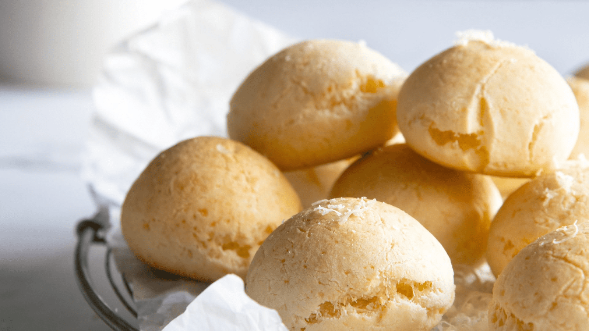
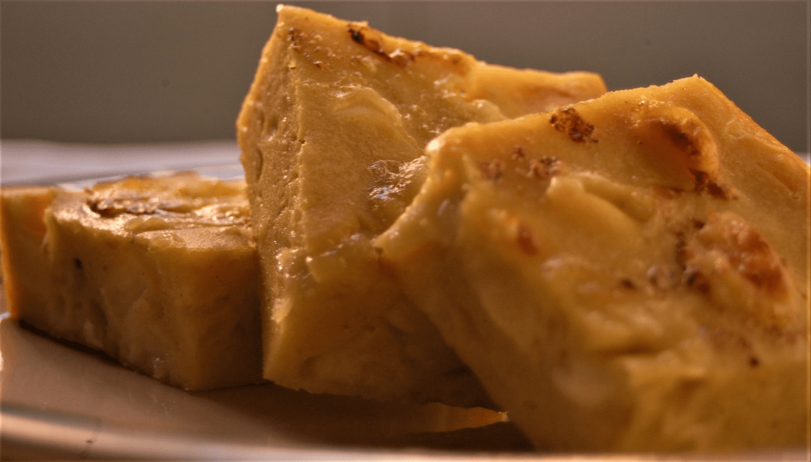
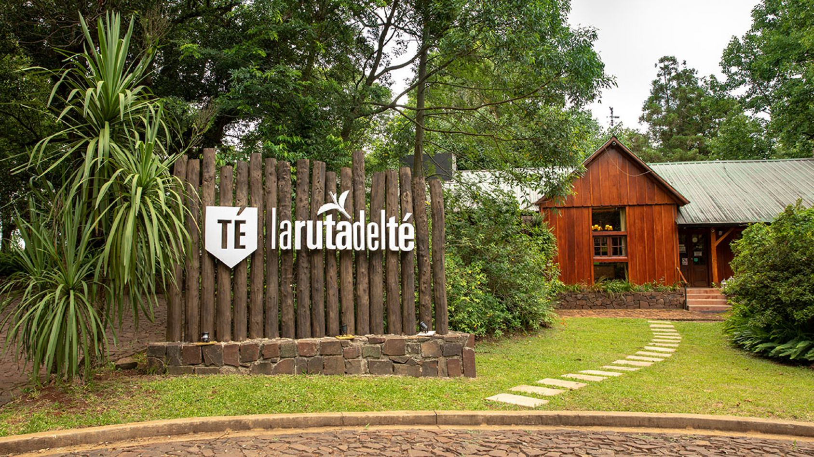
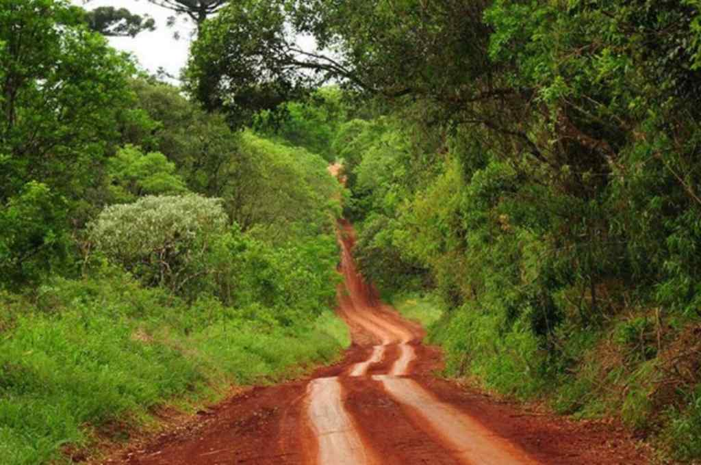

Destino a viajar, Misiones.
- Clima
- Gastronomia
- ¡Los mejores lugares para visitar!
- Itinerario de Viaje Argentina
Clima.
El clima de Misiones es subtropical húmedo sin estación seca, por lo cual es la provincia más húmeda del país. Las localidades de baja altitud del sector sur y de los valles del Paraná y el Uruguay poseen clima semitropical húmedo, en tanto a mayor altitud se presenta el clima tropical marítimo, un tipo climático similar al clima subtropical húmedo. Los vientos predominantes son del noreste, sudeste y este. El bioma que presenta es selva misionera y bosque en galería. Parte de la selva ha sido transformada por el hombre para cultivos o ganadería. El bioma original se encuentra protegido en el parque nacional Iguazú y otros parques y reservas provinciales. La temperatura media anual es de 24 °C.
Gastronomia.
- La comida estelar: Chipá, chipacito 
- La sopa paraguaya. 
- El chipá o la chipa es un producto elaborado con almidones de mandioca, huevos y queso criollo, sometido al calor del horno,
se trata de unos deliciosos bollos o panes de queso, originales de la región misionera, pero que desde años
ha ido conquistando los corazones de personas alrededor del mundo. Esta panificación tiene su origen en la gastronomía paraguaya y
en la zona litoral de la Argentina.
- Te dicen sopa y lo primero que imaginas es un alimento líquido lleno de verduras en un plato hondo, pero la sopa paraguaya,
a pesar de su nombre, es un alimento sólido y consistente. Con un sabor delicioso, la sopa paraguaya es lo más parecido a
un bizcochuelo esponjoso salado, de muy rico contenido calórico y proteico a base de maíz blanco, queso, huevos y especias.
¡Una verdadera delicia!
¡Los mejores lugares para visitar!.
Las Cataratas del Iguazú.
Son la principal atracción turística de la provincia. En el año 2005 la provincia recibió aproximadamente 1.300.000 visitantes de los cuales 1.000.000 aprox. fueron a las Cataratas ―la gran mayoría de los extranjeros van allí―. El otro gran polo de atracción turística ―aunque mucho menor que las cataratas― son las Reducciones Jesuíticas, en especial la de San Ignacio, que recibió unos 150.000 visitantes en 2005 y es la mejor conservada. Posadas, aunque recibe una buena cantidad de turistas, es una ciudad de paso en el camino hacia los principales destinos turísticos.

El Camino del Té.
El Camino del Té (o Ruta del Té) es un evento especial que se realiza la segunda quincena de noviembre en la provincia de Misiones, a lo largo de la Ruta Nacional 14, entre las localidades de Cerro Azul, Leandro N. Alem, Oberá y Campo Viera. Es una propuesta Gourmet surgida del Club del Té en la Argentina.
Ruta de la Yerba Mate
Otro atractivo es la Ruta de la Yerba Mate que une los principales atractivos del noreste de la provincia de Corrientes y la provincia de Misiones en los territorios que antiguamente ocupaban las Misiones Jesuíticas. Territorio donde se inició el cultivo controlado de la Yerba Mate
| Horario | Actividad | Ubicacion | Detalles |
|---|---|---|---|
| 09:00 | Visita a las Cataratas | La selva amazonica. | ¡Vamos a ver una de las maravillas del mundo y a los cuatís! |
| 12:00 | El camino del té. | Ruta Nacional 14. | Disfrutar de la propuesta gourmet. |
| 17:00 | Ruta yerba mate. | Al noroeste de Misiones. | Veremos los origenes de la yerba mate. |